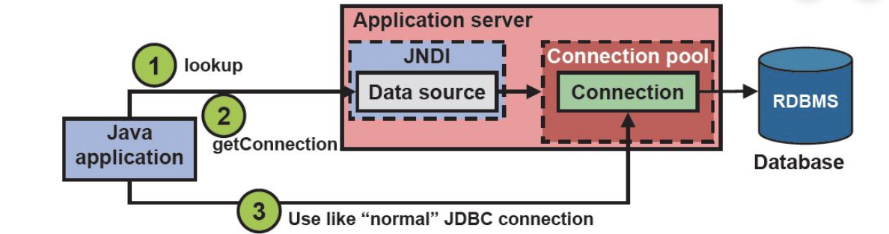
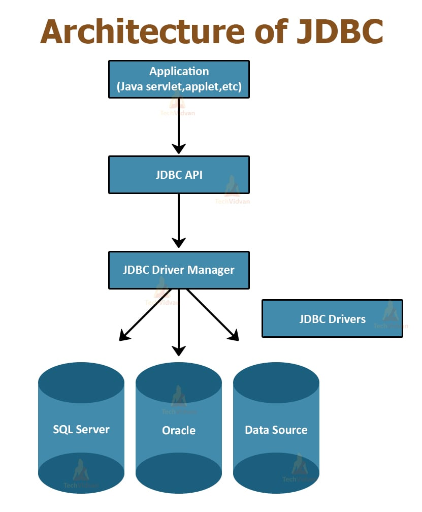

¿Qué significa JDNI?
JNDI, que significa Java Naming and Directory Interface, es una herramienta de
programación en Java que permite a las aplicaciones conectarse a servicios de
nombres y directorios. Imagina que es como una agenda de contactos universal
para tus programas. En lugar de que tu aplicación tenga que saber la dirección
o ubicación exacta de un recurso (como una base de datos o un servidor de correo),
JNDI te permite buscarlo por un nombre más simple y comprensible.

¿Qué significa JDBC?
JDBC (Java Database Connectivity) es la API estándar de Java que permite a las
aplicaciones conectarse y comunicarse con bases de datos relacionales, como MySQL,
Oracle, y SQL Server. Actúa como un puente entre tu programa Java y la base de datos,
proporcionando un conjunto de clases e interfaces que facilitan la ejecución de sentencias
SQL. Esto incluye tareas esenciales como establecer una conexión, enviar consultas (SELECT,
INSERT, UPDATE), y procesar los resultados que devuelve la base de datos.

Cómo Funcionan
¿Cómo funciona JDNI?
Funciona como Interface, es como un directorio telefónico para tus
aplicaciones Java. En lugar de que tu programa tenga que saber la dirección exacta de
un recurso (como una base de datos), JNDI le permite buscarlo por un nombre más simple
y amigable, por ejemplo, "MiBaseDeDatosPrincipal". JNDI se encarga de encontrar la ubicación
real de ese recurso y conectar tu aplicación a él. Esto hace que tu código sea más flexible,
ya que si la ubicación del recurso cambia, solo tienes que actualizar la configuración de JNDI,
no el código de tu programa.
¿Cómo funciona JDBC?
JDBC (Java Database Connectivity) es una API de Java que permite a las aplicaciones conectarse
y comunicarse con bases de datos relacionales. Funciona como un intermediario o "puente" entre
tu código Java y la base de datos. Tu aplicación utiliza los métodos y clases de JDBC para enviar
sentencias SQL (como SELECT o UPDATE) de forma estandarizada. A su vez, un controlador JDBC específico
para cada base de datos (por ejemplo, para MySQL o PostgreSQL) se encarga de traducir esas llamadas de
la API en el lenguaje que la base de datos entiende, ejecutar la acción y devolver los resultados a tu programa.
Pasos Para implementarlo
1. Configuración en el Servidor
El primer paso para usar JNDI y JDBC en una aplicación web es configurar una fuente de datos (DataSource) directamente
en el servidor de aplicaciones, como Tomcat o WildFly. Esta configuración le dice al servidor cómo conectarse a la base
de datos (con su URL, usuario y contraseña). El servidor le asigna un nombre a esta configuración, como jdbc/MiBaseDeDatos,
para que tu aplicación la pueda encontrar. De esta manera, los detalles de la base de datos no están en el código de tu aplicación.

2. Uso de JNDI en tu aplicación
Tu aplicación web usa la interfaz JNDI para buscar esa fuente de datos por el nombre que le asignaste en el servidor. Imagina que tu aplicación
le pregunta a JNDI: "¿Dónde está jdbc/MiBaseDeDatos?". JNDI se encarga de buscar esa configuración y le entrega a tu aplicación un objeto DataSource
listo para usarse.

3. Conexión con JDBC
Con el objeto DataSource que obtuviste de JNDI, tu aplicación puede pedirle una conexión activa a la base de datos. Esta es la parte de JDBC.
Tu aplicación usa esta conexión para ejecutar consultas SQL (como SELECT o INSERT). Una vez que la aplicación ha terminado de trabajar con la
base de datos, le pide al servidor que cierre la conexión para liberar recursos.